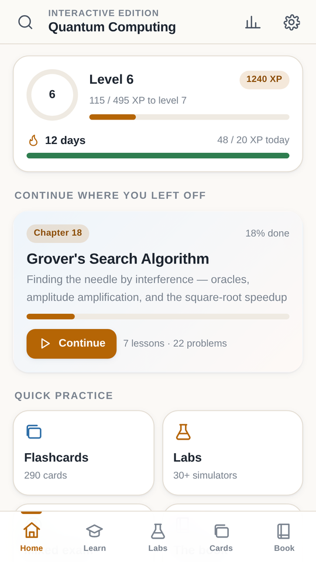
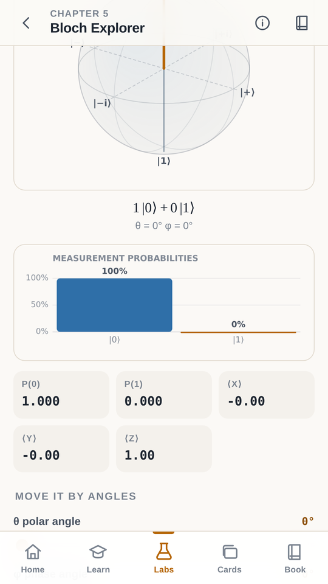
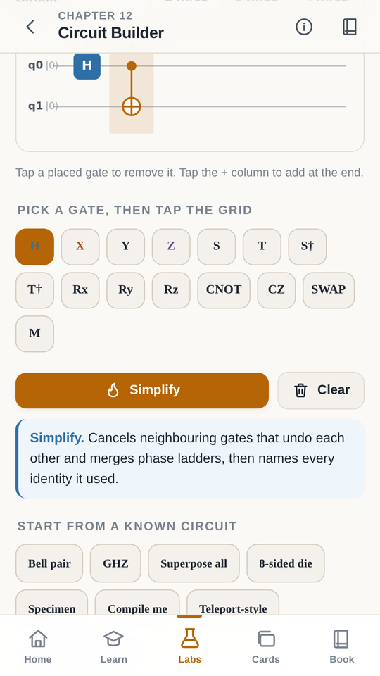
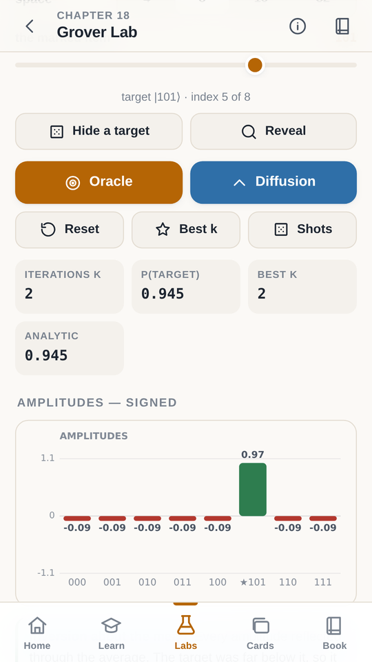
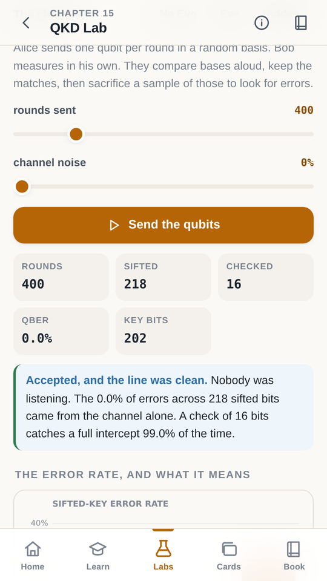
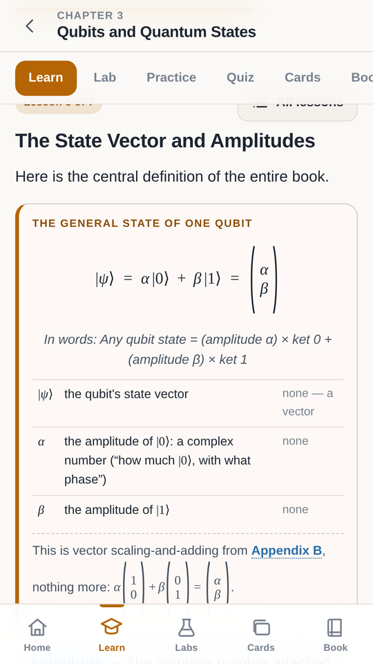
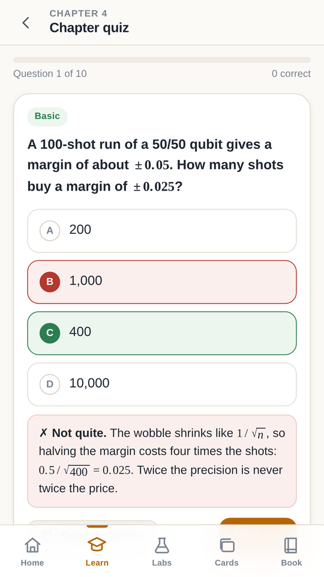
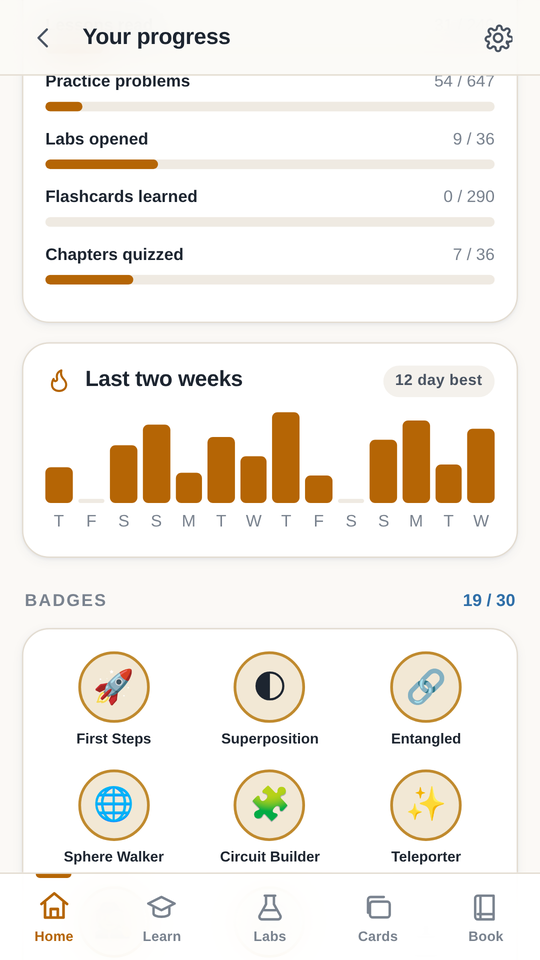

393 pages that build every idea from zero — and a free Android app with 36 interactive labs, where every number on screen is worked out by the app's own quantum simulator while you watch.
Free. No ads, no accounts, no permissions. Works with no connection.The book and the app are the same course. Every chapter has a lab, and every lab is built on the mathematics that chapter just taught you.
Every idea is explained in short sentences and common words before a single symbol appears. Complex numbers, vectors and probability are taught from zero in three appendices, so school algebra is enough to begin.
Drag a qubit around the Bloch sphere. Build a circuit gate by gate. Watch Grover's search grow the right answer, then push it too far and watch it shrink. Catch an eavesdropper from the error rate on a quantum key.
Three levels of practice at the end of every chapter, plus quizzes with explanations and flashcards that come back just before you would forget them. A separate Teacher's Guide solves every problem step by step.
The app carries its own quantum simulator — state vectors, gates, measurement, noise. When a lab says the success probability is 94.5%, it worked that out from the amplitudes a moment ago. Nothing is pre-recorded and nothing is faked.








36 of them, one per chapter and appendix — state builder, measurement lab, circuit builder, teleportation, BB84, Grover, Shor, VQE, quantum machine learning, noise, error correction and hardware.
All 393 pages are bundled in the app and read with a built-in page reader — bookmarks, night mode, and a jump straight to the chapter you are studying.
360 questions written by hand, each one telling you why the right answer is right and linking back to the lesson that teaches it.
290 cards covering every key term and equation, scheduled so a card returns just before you would have forgotten it.
A guided path through the eight parts, with XP, daily streaks, 30 badges and a mastery reading for every chapter.
No permissions at all. No internet permission, so it cannot reach a network even if it wanted to. No ads, no analytics, no accounts. Your progress never leaves the device.
It is on Google Play, but only people on the tester list can install it while testing runs. Adding yourself takes about ten seconds.
Thirty-one chapters in eight parts, and five appendices that teach the mathematics from nothing. Every chapter follows the same shape: learning goals, plain explanations with figures, key terms, real equations with worked examples, activities, a case study from the real world, common mistakes, a summary, and practice at three levels.
The book is free to download and free to use in teaching. If you use it in a course, I would be glad to hear about it.